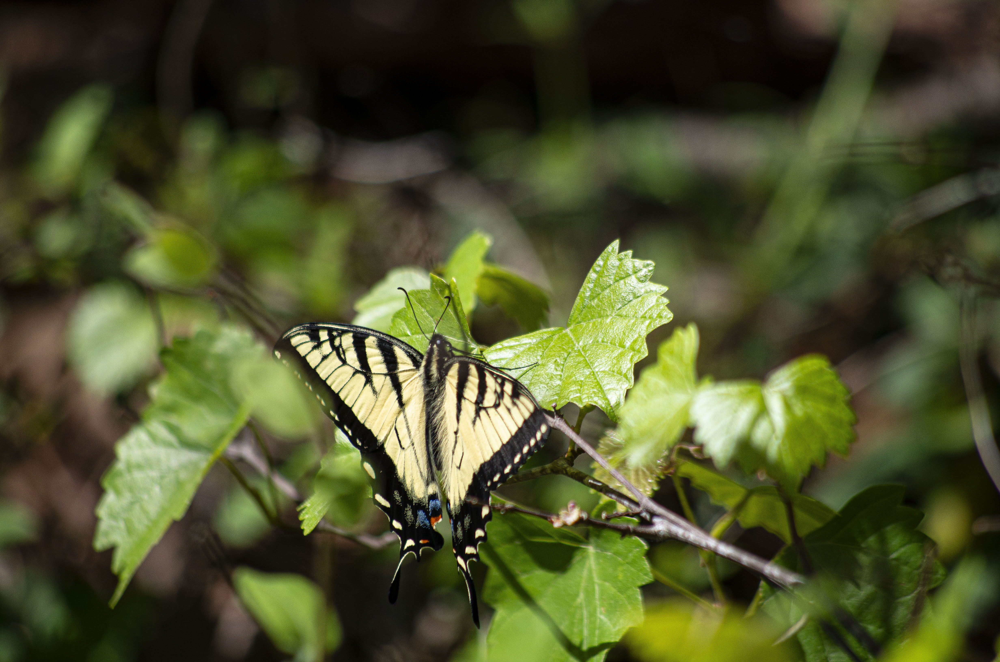
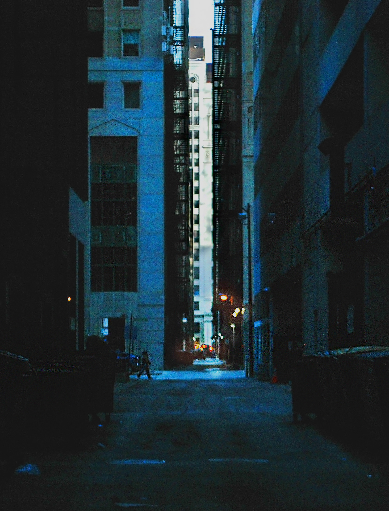

This picture was taken during one of my many nature walks with camera in hand. It exemplifies the beauty of nature and the creatures in our world. Click to see more nature photography.

This is part of my film noir series. Click to see the rest of the series.

This is my series of images inspired by the song "The Dirt I'm Buried In" by Avatar. The aesthetic of the song and this project includes bright lights, themes of desperation and lonliness, and dark themes hidden by bright instrumentals.
This was taken for a professional photoshoot of a client who worked as a hairdresser. click to see more images.
| Double click to collapse | |

|

Part of a story in photos. Here, a cult member brings you a chalice filled with a mysterious substance.
